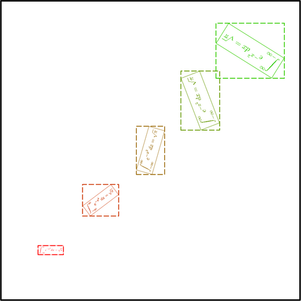
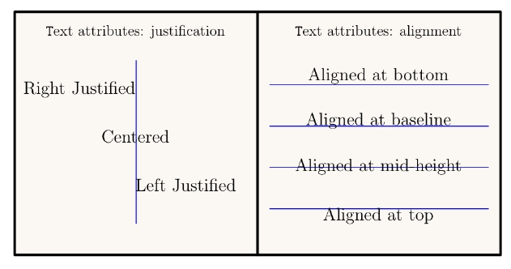
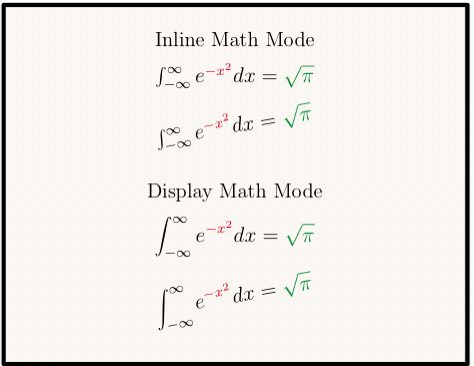
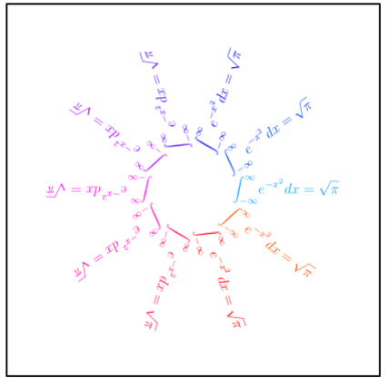
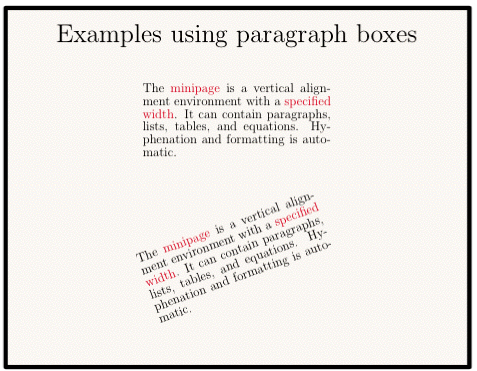
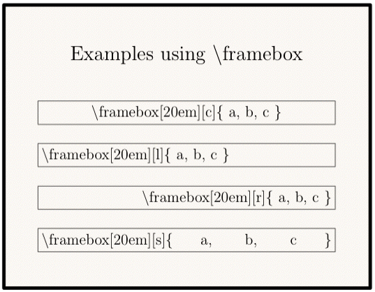

class Tioga::TeX_Text
Text in tioga goes to TeX for typesetting: you aren't using a partial emulation that is sort-of-like TeX, you are using the real thing.
Since text strings in tioga are passed directly to TeX, you can basically do anything in the text of figures that you can do with text in TeX. The text string can include embedded commands to change font size, family, or whatever. However, more commonly the text string will leave the font selection to a higher level in the document. In tioga it is easy for you to use the “NFSS”, TeX's “New Font Selection Scheme” that specifies the font by independently setting family, series, shape, and size. Families include roman, sans serif, and typewriter.
Series include medium and bold face. Shapes include upright, italic, slant, and small caps. All these, and the size, are set in the SetTiogaFontInfo command in the TeX file preamble. The tioga defaults for size, family, series, and shape are 10 point roman, medium, and upright. You can change these by means of the attributes #tex_fontfamily, #tex_fontseries, #tex_fontshape, and tex_fontsize. Just like for the tex_preview page and figure sizes, these are given as strings to be copied to the TeX preview file as part of the SetTiogaFontInfo definition.
Text is sized by giving a scale factor relative to a base size. The base size is given by the attribute #default_font_size, that is initialized to 10 and can be changed using set_default_font_size. The scale factor is called #default_text_scale, is initialized to 1.0, and is changed by rescale_text. When you do a #show_text command in tioga, the call can include an additional scale factor. The product of this extra factor times the #default_text_scale times the #default_font_size determines the size in big points on the output page. At least that's the size the text will have if the output page doesn't get scaled up or down, and the TeX document doesn't decide to change things! With text that is being passed to TeX for typesetting, the final decisions aren't made until the last moment. See Page_Frame_Bounds for more details.
See Tutorial::TextForTeX for information about how to add packages and how (and how not) to enter text for TeX.
Public Instance Methods
Default for text vertical alignment. Valid settings are predefined
constants: ALIGNED_AT_TOP, ALIGNED_AT_MIDHEIGHT,
ALIGNED_AT_BASELINE, and ALIGNED_AT_BOTTOM. See
also justification.
# File lib/Tioga/TeX_Text.rb, line 325 def alignment end
Returns true if the point given by the figure coordinates
(x, y) is inside the current label clipping margins. The
routine #show_label uses
this to filter out unwanted text by testing the reference point. If the
point passes this test, then #show_label calls #show_text; otherwise, it
simply returns without showing the text.
# File lib/Tioga/TeX_Text.rb, line 303 def check_label_clip(x, y) end
Default font size in points (relative to the #default_font_size). Is initialized to 10.0 and changed by set_default_font_size. The intention is that this gets set rarely and most font sizing is done using rescale_text.
# File lib/Tioga/TeX_Text.rb, line 450 def default_font_size end
Height of text having the #default_text_scale as measured in x figure coordinates.
# File lib/Tioga/TeX_Text.rb, line 332 def default_text_height_dx end
Height of text having the #default_text_scale as measured in y figure coordinates.
# File lib/Tioga/TeX_Text.rb, line 339 def default_text_height_dy end
Default factor determining text size (relative to the default font size). Is initialized to 1.0 and changed by rescale_text.
# File lib/Tioga/TeX_Text.rb, line 439 def default_text_scale end
Returns information about the text measure named name. It returns a hash with the following information:
* _[xy][tb][lr]_ the X/Y coordinates of the Top/Bottom Left/Right point of the box around the text (top, left, right and bottom are relative to the text natural orientation) * _just_ the text justification * _angle_ the text's angle, in degrees * _tex_measured_depth_, _tex_measured_height_, tex_measured_width_, the text's depth, width and height as measured by TeX, (does not take scaling into accound) * _xanchor_, _yanchor_: the page coordinates of the position of the text (the ones that were given to #show_text) * _points_ an array of (x,y) coordinates of the points that make the box, in the order bottom left, bottom right, top right, top left. * _depth_, _width_, _height_ : the size of the text. * _align_ the alignment of the text
All the measures are given in postscript points, which means you need to multiply by 10 before using the with Tioga::Page_Frame_Bounds#convert_output_to_figure_x Tioga::Page_Frame_Bounds#convert_output_to_figure_y. See the example
Please make sure you test the presence of one key before using it, as any code using measures has to run twice: one first time to typeset the text and ask LaTeX for information about its size, and the second time to actually use the information. You don't need to call the code twice as it is done automatically, but keep in mind that in the first run, the returned hash will be empty.
def text_size_with_rotation t.stroke_rect(0,0,1,1) t.rescale(0.5) equation = '\int_{-\infty}^{\infty} \! e^{-x^{2}}\, \! dx = \sqrt{\pi}' text = "\\fbox{$\\displaystyle #{equation}$}" nb = 5 nb.times do |i| scale = 0.5 + i * 0.2 angle = i * 37 x = (i+1)/(nb+1.0) y = x color = [1.0 - i * 0.2, i*0.2, 0] t.show_text('text' => text, 'color' => color, 'x' => x, 'y' => x, 'alignment' => ALIGNED_AT_MIDHEIGHT, 'scale' => scale , 'measure' => "box#{i}", 'angle' => angle ) size = t.get_text_size("box#{i}") if size.key? 'points' xs = Dvector.new ys = Dvector.new for x,y in size['points'] xs << t.convert_output_to_figure_x(x) ys << t.convert_output_to_figure_y(y) end t.stroke_color = color t.line_type = Line_Type_Dashes t.stroke_rect(xs.min, ys.min, (xs.max - xs.min),(ys.max - ys.min)) end end end

# File lib/Tioga/TeX_Text.rb, line 282 def get_text_size(name) end
Default for text horizontal justification. Valid settings are predefined
constants: LEFT_JUSTIFIED, CENTERED, and
RIGHT_JUSTIFIED. See also alignment.

# File lib/Tioga/TeX_Text.rb, line 315 def justification end
Size of margin on bottom of frame measured as a fraction of frame height, with positive values corresponding to margins on the inside of the frame, and negative values to margins on the outside. The #show_label routine discards text having its reference point below this position.
# File lib/Tioga/TeX_Text.rb, line 383 def label_bottom_margin end
Size of margin on left of frame measured as a fraction of frame width, with positive values corresponding to margins on the inside of the frame, and negative values to margins on the outside. The #show_label routine discards text having its reference point to the left of this position.
# File lib/Tioga/TeX_Text.rb, line 350 def label_left_margin end
Size of margin on right of frame measured as a fraction of frame width, with positive values corresponding to margins on the inside of the frame, and negative values to margins on the outside. The #show_label routine discards text having its reference point to the right of this position.
# File lib/Tioga/TeX_Text.rb, line 361 def label_right_margin end
Size of margin on top of frame measured as a fraction of frame height, with positive values corresponding to margins on the inside of the frame, and negative values to margins on the outside. The #show_label routine discards text having its reference point above this position.
# File lib/Tioga/TeX_Text.rb, line 372 def label_top_margin end
Changes the #default_text_scale attribute by multiplying it times scale. This also updates the #default_text_height_dx and #default_text_height_dy attributes to match the new setting for default_text_scale. See also rescale.
# File lib/Tioga/TeX_Text.rb, line 289 def rescale_text(scale) end
Sets the font size in points. If the 'update_size_string' flag is true, then the 'tex_fontsize' attribute will be set to match the new font size. The intention is that #set_default_font_size gets called rarely and most font sizing is done using rescale_text.
# File lib/Tioga/TeX_Text.rb, line 460 def set_default_font_size(size, update_size_string = true) end
Calls #check_label_clip with
the location for the text reference point from the dict. If #check_label_clip
returns false, this routine simply returns. Otherwise, it
passes the dict to show_text.
# File lib/Tioga/TeX_Text.rb, line 295 def show_label(dict) end
This routine takes care of text that is being sent to TeX for typesetting (see also show_marker for text being used as graphics and sent directly to PDF).
The location of the reference point for the text can be given either in figure coordinates ('x' and 'y', or 'at') or relative to an edge of the frame ('side', 'position', and 'shift').
You can optionally provide a color as an RGB triple which will be used in a 'textcolor' command for TeX enclosing the rest of the text.
The text is scaled by the product of the 'scale' entry times the current value of the #default_text_scale attribute. It is rotated by the given 'angle'.
The reference point can be specified horizontally ('justification') and vertically ('alignment').
The 'text' to be sent to TeX can contain anything that TeX will let you put in a box. In addition to the usual text and inline math, you can also do display math, lists, tables, etc.
You can even define your own commands in your TeX preamble and then use those commands as part of the text in the figure.
NOTE: When entering text for TeX in your Ruby program, you'll generally want to use single quotes around the string rather than double quotes. With single quotes, backslashes are treated as normal characters (except for the two special cases of ' and \), so TeX commands using backslashes don't cause trouble.
With double quotes, Ruby uses backslash for a variety of escape characters such as newline (n) and tab (t), so the backslashes for TeX need to be entered as \ pairs to be safe. Compare '$nusimtau$' to the equivalent form “$\\nu\\sim\\tau$” and the incorrect form “$nusimtau$”.
Starting from Tioga 1.7, Tioga can measure the TeX text it typesets. For that purpose, provide show_text with a 'measure' dictionnary entry that serves as a key to retrieve the information using get_text_size.
Dictionary Entries
'text' => a_string # to be processed by TeX 'side' => a_side # TOP, BOTTOM, LEFT, or RIGHT 'loc' # alias for 'side' 'position' => a_float # fractional distance along side from bottom left 'pos' # alias for 'position' 'shift' => a_float # distance away from side in units of text height 'at' => [ x, y ] # figure coordinates for text reference point 'point' # alias for 'at' 'x' => a_float # x location for reference point 'y' => a_float # y location for reference point 'color' => a_color # default is to omit color specification 'scale' => a_float # scale relative to default_text_scale. default 1 'angle' => a_float # degrees to rotate. default 0 'alignment' => an_alignment # see discussion of alignment 'justification' => a_justification # see discussion of justification 'measure' => a_string # the name of the measure
Examples
def math_typesetting centerx = t.bounds_xmin + 0.5 * t.bounds_width equation = '\int_{-\infty}^{\infty} e^{\color{Red}-x^{2}}\, ' + '\! dx = \color{Green}\sqrt{\pi}' t.justification = CENTERED t.rescale_text(0.8) t.show_text( 'text'=>'Inline Math Mode', 'x'=>centerx, 'y' => t.bounds_ymin + 0.88 * t.bounds_height) t.show_text( 'text'=>'Display Math Mode', 'x'=> centerx, 'y' => t.bounds_ymin + 0.46 * t.bounds_height) t.rescale_text(0.8) t.show_text( 'text'=>'$' + equation + '$', 'x'=> centerx, 'y' => t.bounds_ymin + 0.78 * t.bounds_height, 'scale'=>1.3) t.show_text( 'text'=>'$' + equation + '$', 'x'=> centerx, 'y' => t.bounds_ymin + 0.64 * t.bounds_height, 'angle' => 10, 'scale'=>1.3) equation = '\begin{displaymath}' + equation + '\end{displaymath}' equation = '\parbox{15em}{' + equation + '}' t.show_text( 'text'=>equation, 'x'=> centerx, 'y' => t.bounds_ymin + 0.33 * t.bounds_height, 'scale'=>1.3) t.show_text( 'text'=>equation, 'x' => centerx, 'y' => t.bounds_ymin + 0.16 * t.bounds_height, 'angle' => 10, 'scale'=>1.3) end

def strings t.stroke_rect(0,0,1,1) center_x = 0.5; center_y = 0.5; len = 0.125 hls = t.rgb_to_hls(Red) angles = 10 delta = 360.0/angles equation = '\int_{-\infty}^{\infty} \! e^{-x^{2}}\, \! dx = \sqrt{\pi}' text = '\parbox{15em}{\begin{displaymath}' + equation + '\end{displaymath}}' angles.times do |angle| angle *= delta dx = len*cos(angle*RADIANS_PER_DEGREE) dy = len*sin(angle*RADIANS_PER_DEGREE) x = center_x + 2*dx; y = center_y + 2*dy; text_color = t.hls_to_rgb([angle/1.8 + 200, hls[1], hls[2]]) t.show_text('text' => text, 'color' => text_color, 'x' => x, 'y' => y, 'alignment' => ALIGNED_AT_MIDHEIGHT, 'scale' => 0.7, 'angle' => t.convert_to_degrees(dx,dy)) end end

def minipages centerx = t.bounds_xmin + 0.5 * t.bounds_width t.show_text( 'text' => 'Examples using paragraph boxes', 'x' => centerx, 'y' => 0.9) t.rescale_text(0.5) t.justification = CENTERED str2 = 'The \textcolor{Red}{minipage} is a vertical alignment ' + 'environment with a \textcolor{Red}{specified width}. ' + 'It can contain paragraphs, lists, tables, ' + 'and equations. Hyphenation and formatting is automatic.' str2 = '\parbox{15em}{' + str2 + '}' t.show_text( 'text' => str2, 'x'=> centerx, 'y' => t.bounds_ymin + 0.68 * t.bounds_height) t.show_text( 'text' => str2, 'x'=> centerx, 'y' => t.bounds_ymin + 0.30 * t.bounds_height, 'angle' => 20) end

def framebox centerx = t.bounds_xmin + 0.5 * t.bounds_width t.justification = CENTERED t.show_text( 'text' => 'Examples using \textbackslash framebox', 'x' => centerx, 'y' =>0.8) dx = 0.05; y = 0.6; dy = -0.15; t.line_width = 0.7; t.stroke_color = Blue t.rescale_text(0.75) t.show_text( 'text' => '\framebox[20em][c]{\textbackslash framebox[20em][c]\{ a, b, c \}}', 'at' => [centerx, y]) y += dy t.show_text( 'text' => '\framebox[20em][l]{\textbackslash framebox[20em][l]\{ a, b, c \}}', 'at' => [centerx, y]) y += dy t.show_text( 'text' => '\framebox[20em][r]{\textbackslash framebox[20em][r]\{ a, b, c \}}', 'at' => [centerx, y]) y += dy t.show_text( 'text' => '\framebox[20em][s]{\textbackslash framebox[20em][s]\{ a, b, c \}}', 'at' => [centerx, y]) end

# File lib/Tioga/TeX_Text.rb, line 209 def show_text(dict) end
This string will be used as the basic font family specification in the preview TeX file. Valid strings include 'rmdefault', 'sfdefault', and 'ttdefault', for roman face, sans serif face, and typewriter face, respectively.
See also: #tex_fontsize, #tex_fontseries, and tex_fontshape.
# File lib/Tioga/TeX_Text.rb, line 483 def tex_fontfamily end
This string will be used as the basic font series specification in the preview TeX file. Valid strings include 'mddefault' and 'bfdefault', for medium and bold face, respectively.
See also: #tex_fontsize, #tex_fontfamily, and tex_fontshape.
# File lib/Tioga/TeX_Text.rb, line 494 def tex_fontseries end
This string will be used as the basic font shape specification in the preview TeX file. Valid strings include *'updefault', 'itdefault', 'sldefault', and 'scdefault', for upright, italic, slant, and small caps, respectively.
See also: #tex_fontsize, #tex_fontfamily, and tex_fontseries.
# File lib/Tioga/TeX_Text.rb, line 506 def tex_fontshape end
This string will be used as the basic font size specification in the preview TeX file. Valid strings include things like '10.0' or '12.0'.
See also: #tex_fontfamily, #tex_fontseries, and tex_fontshape.
# File lib/Tioga/TeX_Text.rb, line 471 def tex_fontsize end
The string for a numeric label is put in this TeX command string to be formatted. For example,
$#1$
will give the numbers in math mode, while
$\mathsf{#1}$
will show the label using the math sans-serif font. Alias for xaxis_numeric_label_tex.
# File lib/Tioga/TeX_Text.rb, line 521 def tex_xaxis_numeric_label end
The string for a numeric label is put in this TeX command string to be formatted. For example,
$#1$
will give the numbers in math mode, while
$\mathsf{#1}$
will show the label using the math sans-serif font. Alias for yaxis_numeric_label_tex.
# File lib/Tioga/TeX_Text.rb, line 535 def tex_yaxis_numeric_label end
Default value for “shift” in show_yaxis when “loc” is
AT_X_ORIGIN.
# File lib/Tioga/TeX_Text.rb, line 423 def text_shift_from_x_origin end
Default value for “shift” in show_xaxis when “loc” is
AT_Y_ORIGIN.
# File lib/Tioga/TeX_Text.rb, line 431 def text_shift_from_y_origin end
Default value for “shift” in #show_text when “side” is
BOTTOM.
# File lib/Tioga/TeX_Text.rb, line 415 def text_shift_on_bottom end
Default value for “shift” in #show_text when “side” is
LEFT.
# File lib/Tioga/TeX_Text.rb, line 391 def text_shift_on_left end
Default value for “shift” in #show_text when “side” is
RIGHT.
# File lib/Tioga/TeX_Text.rb, line 399 def text_shift_on_right end
Default value for “shift” in #show_text when “side” is
TOP.
# File lib/Tioga/TeX_Text.rb, line 407 def text_shift_on_top end